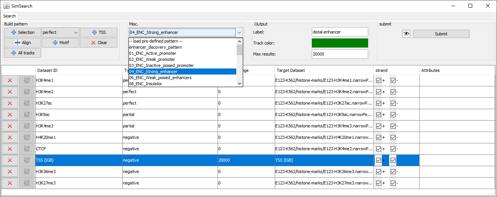

Usage¶
We describe here the Main Panel, used to define a pattern to search and choose the options and parameters to use, how to edit the pattern, and the Result panel, form which it is possible to browse and analyse the results. We also list the annotations available directly from this plugin.
Main panel¶
Build pattern¶
Selection: Add selected elements to the pattern. It can be one or more regions selected in the browser, or one or more tracks (select the track name on the left of the browser).
Dataset type: Select wether the datasets added should be of type perfect matching, partial matching, negative matching or any other type. This can be changed later in the pattern table.
Align: Put all regions from the pattern at the same position.
Motif: Search for DNA motif, for instance a known transcription factor motif such as the E-box. The motif should be entered as a string (only nucleotide letter: A, C, G and T). Note that this will only work if the DNA sequence has already been loaded in the browser. Example: search for the E-box, canonical motif = CACGTG
TSS: Add the transcription start sites as a dataset.
Clear: Remove all datasets from the pattern.
All tracks: Add all tracks loaded in the browser to the pattern. For instance if all the histone marks ChIP-seq tracks have been loaded. The pattern tracks can be individually edited or removed from the pattern later.
Misc.¶
Load pre-defined pattern: Load a predefined pattern (chromatine states inferred from the results of ChromHMM). The plugin associates each track in the chosen predefined pattern to a track loaded in the browser based on track names. The user should verify that the mapping is correct.
Use attributes: Use attributes of the target tracks when searching for the best match. The attributes are selected individually for each track.
Advanced parameters:
Minimum similarity score of results: Results with a score lower than this threshold will be discarded
Minimum alignment score for perfect match: Individual dataset region alignments with a score below this threshold will be discarded. We usually select a low threshold (e.g. 0.01), to avoid matching regions too distant ones from the others.
Score for missing partial match: Score assigned when a matching region in a partial matching dataset is missing. The lower the score, the more penalyzed will be the result for the absence of the dataset region.
Distance between regions based on: Used to decide whether to take into consideration the distance between the centers of the regions, or the distance between the right end of the first region and the left end of the second region. The normalized centroid distance is equal to the centroid distance divided by half the sum of the lengths of the matching regions. It permits to avoid loosing information with large regions that may overlap although their centers are distant.
Example:
Region 1 (length = 12) ------|------ Region 2 (length = 8) ----|----
Centroid distance = 9, the algorihtm may give it a low score.
Normalized centroid distance = 9 / (6 + 4) = 0.9; Low distance (the regions ovelap although their centers are not close one to the other).
Distance mismatch computed using: Choose between L1 (Manhattan distance) and L2 (Euclidean distance).
Alignment score sigmoid mid-point: The sigmoid is the function used to calculate a similarity score between 0 (big distance) and 1 (distance = 0). The mid-point sets the distance for which the similarity is equal to 0.5.
Aligment score sigmoid slope: : Slope of the sigmoid function used to mitigate the effect that single score (cost) components of the aligment might have on the overall score (cost) of a matching..
Use diversity: when calculating the similarity; it is possible to take in consideration the attributes of the genomic regions (e.g. fold enrichment).
Is region length relevant for computing region similarity: If true, the matching regions should have similar length to give a high score.
Output¶
Label: Name given to the tab and the new track.
Track color: Color for the new track created.
Max results: Number of regions found with top matching pattern.
Submit¶
View pattern: Display a graphical representation of the pattern.
Submit: Submit the query.
Edit the pattern¶
Dataset buttons: Remove the dataset, Edit the dataset attribute mapping (only if the option “Use attributes” is selected).
Dataset ID: It is possible to edit the name of the dataset.
Dataset type: Select the type for this dataset, see table below.
Distance should not be perfectly aligned (default: 0, i.e. perfectly aligned detasets)|
Type |
Description |
Example |
Distance/Range |
|---|---|---|---|
Perfect matching |
A matching region SHOULD be present. |
H3K4me3 has to be present when looking for the promoter pattern. |
Format: A single position (center of the region) or a range if the lenght is important. This attribute is used to search for regions that should not be perfectly aligned (default: 0, i.e. perfectly aligned detasets) |
Partial matching |
Regions that might be missing in the results; candidate patterns whose regions remain unmatched are negatively scored. |
Co-factors |
See perfect matching. |
Negative matching |
Regions that should not appear in the solution, candidate patterns enclosing those regions are removed from the solution search space. |
H3K27ac in enhancer pattern. TSS for distant enhancer pattern. The negative track can be associated with a distance (the negative regions are extended on both sides to this distance, for instance 1000 bp from TSS) |
Indicate the minimum distance between positive matching and regions from this dataset. |
Valid area |
This is the opposite of negative matching: All regions out of the valid area are removed. |
TSS in the promoter pattern. TADs. |
Distance allowed from the borders of the regions of this dataset. For instance allow a distance of 1000 bp from the TSS. |
Loop |
Interacting regions. Each region is associated with a second region. All regions from other dataset that overlap are copied to the interacting region. |
DNA contact map inferred from Hi-C experiments: the loops bring together a physically distal enhancer with its associated TSS. |
Extend the contact regions with the distance specified. |
Loops are provided as a BED file, where each row contains two blocks that refer to two contact regions. e.g. chrom chromStart chromEnd name score strand thickStart thickEnd itemRgb blockCount blockSizes blockStarts 14 24800000 24910000 . 1000 . 24800000 24910000 255,0,0 2 10000,10000 0,100000 The important columns are blockCount=2 (2 regions), blockSizes (size of each interacting region), blockStarts (starting position of each interactint region).
For instance, if region 4-13 interacts with region 25-33:
4 13
…|——–|…..
- …|——–|...........|——–|……. <- .
- 4 13 25 34 …….|——–|…..
34 25
Bed file will look like:
chrom chromStart chromEnd name score strand thickStart thickEnd itemRgb blockCount blockSizes blockStarts
14 4 33 . 1000 . 4 33 255,0,0 2 10,10 0,20</pre>
For more details about the BED format https://genome.ucsc.edu/FAQ/FAQformat.html#format1.
Distance/Range: Perfect and partial matching: Position of the region in the pattern. Negative matching: distance from this region below which any matching will be rejected. See table above.
Strand: Search only the selected strand(s).
Result panel¶
Result table¶

Result: ID of the result.
Score: Similarity score for the matching.
Position: Position of the match, described as chromosome: center of the lefter region - center of the righter region.
Example:
chromosome 1:
1000 1004 1008
| | |
Region 1: --------
Region 2: ----------
Position = chr1:1004-1008
Length: length of the matching, calculated as the maximum distance between the centers of the regions that match the pattern.
Nearest gene: Gene whose TSS is the nearest to the center of the matching region of the first perfect matching dataset. If a TSS track is present, then the gene of the TSS in the pattern matching found is selected.
Distance: Distance between the center of the root dataset region and the related TSS.
Up/down stream: Indicate if the matching is up- or down-stream of the nearest gene.
Similarity scores: Each dataset is represented by a colored square, whose height is proportional to the score: A perfect matching with a score of 1 is represented by a perfect square, while a matching with a score of 0.5 is half its height, and an empty space indicates that no matching was found.
Alignment snapshot: A graphical representation of the pattern matching is displayed. The regions of the query pattern are displayed in red, the matching regions in blue. This allows an immediate understanding of which regions are present or missing, and whether the regions are well aligned to the query pattern.
Actions¶
Save: Save the results in a tab delimited file.
Functional annotations: Query Pantherdb to see if the genes identified in the results (nearest genes) are enriched in a particular pathway or biological process.
Name: Name of the pathway or biological process.
p-value: P-value assigned to this enrichment.
Number of genes: Number of genes from the results associated with this term.
Genes: List of genes in the results associated with this term.
Track annotations: It is possible to select the annotations from one of the tracks loaded in the browser (for instance chromatine states identified by ChrommHMM or Segway, available from the SimSearch Quickload server). The plugin counts the annotations that overlap with the results, and performs a Fisher exact test to assess the significance of this association (the total number of annotations of the same type is used as background).
Summary: Show a summary of the results, i.e. the different “partial matching” datasets that match together, and how many times they match together. Each individual combination can be selected to automatically create a new pattern that can be searched and analyzed. For a matter of clarity, smaller combinations are only displayed if they are found more often than more complex ones (for instance, if 100 instances of A + B + C and 100 instances of A + B are found, only A+ B + C is displayed).
Annotation of the results¶
In order to facilitate the analyses of the results, it is possible to annotate them automatically with different sets of information:
Pattern summary¶
This panel shows a summary of each dataset selected and its type. Each row in the table represents a matching pattern found. A color is associated randomly with each dataset, the same color will be used in the result table. For instance: histon marks found more often at the same TSS:
{kind=link}